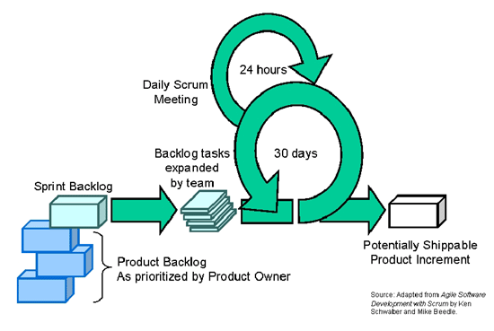

Scrum is a project development process that originally was developed in Japan. The name comes from the rugby term when play is restarted after a foul. Scrum allows for management of software development in an iterative timeframe.
There are a few definitions that are needed to understand the process.

(Image from methodsandtools.com)
It is easier to explain the process which is displayed in the above image by going into more detail about the roles of the participants in greater detail.
Scrum Master
The scrum master is the manager of the scrum team. They make sure that the process is being followed and that the team can do their job. Above all they are there to make sure that the team has all of the tools necessary to complete their sprints. They conduct the daily scrum meetings, make sure that the team is on task, and make sure that the team doesn't have any problems.
Project Owner
The product owner controls the product backlog. The product backlog is the list of requirements (user stories) which is listed in order of priority. Any changes that need to be done to the product backlog goes through the product owner. The product owner is usually the program manager. They are the master of the requirements. They can add items, remove items, and change priority of requirements.
Scrum Team
The scrum team is the team of developers that will be working on the project. The team is usually picked by the Scrum Master. The teams are small, usually less than 10 people. It has been shown that teams of this size work best for the scrum process. The team's role is to complete all of the requirements in the sprint before the sprint is over. They must be able to collaborate between each other to complete this task.
Now comes the details of the process...
Sprint Planning Meeting
Before each sprint begins, the product owner, the scrum master, and the scrum team meet to choose the requirements that will be completed during the next sprint. At the beginning of the project, the product backlog is an incomplete list. In fact, throughout the life of the project the product backlog is incomplete. The scrum master makes sure that the team will have enough work to complete during the sprint, but will make sure that the team does not have too much work to do. The requirements that are chosen for each sprint will become the sprint backlog. The scrum master is in charge of the sprint backlog.
After the meeting between the product owner, scrum master, and scrum team, the scrum team will meet to figure out how it will meet the requirements. The team will set a sprint goal. The sprint backlog are the requirements needed to complete the sprint goal.
Daily Sprint Meetings
The Scrum Master will meet with the members of the Scrum Team each and every day at the same time. The meeting will only be 15 minutes long so that the team will not get distracted. Each team member will be answering these questions, one at a time.
By answering these questions the Scrum Master knows what is wrong (if anything) and knows exactly what everybody has done during the previous 24 hours and what they will be doing in the next 24 hours. The daily sprint meetings are meant as an information sharing meeting and not meant to impede the team members.
Sprint
During this time, the team will work to complete the sprint goal. This is a fixed time period, but is usually 30 days. Although, it can range anywhere between two weeks and two months.
Sprint Review
At the end of a sprint, the stake holders meet with the scrum team, scrum master, and product owner. During this meeting the team shows the stake holders what they have created during the sprint. The team describes what they did during the sprint and shows them the current product. The sprint review meetings happen on the very last day of the sprint. These meetings usually last four hours.
During these meetings the team will demonstrate their project and any difficulties that were experienced. The stake holders will know what went wrong and what went well, along with how far the project has progressed during the previous 30 days.
This is the process in a nutshell.
As you can see, it is a project management process and not a software development process. So you may be asking yourself why to use scrum?
Scrum is important because iterative development processes usually have short iterations. This means that the team must stay focused and make sure that they are able to complete the requirements for their sprints. The Scrum Master ensures that the developers are able to do their job. This is important for the team to be effective at creating their projects.
The Scrum project management process can be wrapped around any iterative development process that has short development iterations. We will explore Extreme Programming as that development process.
Sources
Beedle, Mike and Ken Schwaber. Agile Software Development with Scrum. Upper Saddle River, NJ: Prentice Hall, 2002.
Murphy, Craig. "Adaptive Project Management Using Scrum." January 2004. Methods and Tools. 4 March 2009 <http://www.methodsandtools.com/archive/archive.php?id=18>.